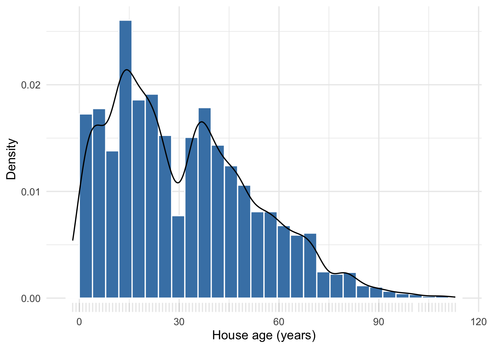

3 Measuring Location and Spread
Visualizations show the shape of a distribution, but we often need concise, numerical descriptions of our data. Statistical summaries compress a distribution into a few quantities which we can report, compare, or use in subsequent statistical analyses.
3.1 Measures of center
The two most common measures of center are the mean and the median.
Definition 3.1: Sample mean
The sample mean is the arithmetic average of the observed values: add them up and divide by how many there are. We write it \(\bar{x}\), read aloud as “x-bar.”
Details and formulas
For observations \(x_1, x_2, \ldots, x_n\),
\[ \bar{x} = \frac{1}{n}\sum_{i=1}^{n} x_i. \]
The summation adds the \(n\) observed values, and dividing by \(n\) turns that total into an average.
For our Austin 78752 prices, the mean is $370,804.
Definition 3.2: Median
The median is the middle value when the data are sorted from smallest to largest. It goes by three other names we have already seen: the 50th percentile, the 0.5 quantile, and the second quartile.
For our prices, the median is $351,478.
Technical detail 3.1: Medians when values tie
When the number of observations is odd, the median is the middle sorted value. When it is even, we use the average of the two middle values. Ties can mean that fewer than half of the observations fall strictly below or strictly above the median. The general rule is that at least half are at or below the median and at least half are at or above it.
The mean here ($370,804) is higher than the median ($351,478) because a few high-priced homes drag the average up. The median is insensitive to how extreme the extremes are: it depends only on the middle of the sorted data.
NoteMean or median?
The mean and the median sit close together in a symmetric distribution. In a right-skewed distribution the mean sits above the median, and in a left-skewed distribution it sits below. A substantial gap between the two is therefore evidence of skewness, outliers, or some other asymmetry, which is a good reason to report both.
Consider the bimodal distribution of house ages in the full Austin housing dataset (Figure 3.1).
The distribution has two broad peaks, while the mean age of 31.2 years falls between them.
3.2 Measures of spread
Knowing the center of a distribution isn’t enough — we also need to know how much values vary around that center. We can think about the spread of a distribution as measuring how unpredictable a variable is. Let’s see an example. Below we plot the distribution of sale prices in ZIP codes 78741 and 78749 from the full Austin housing dataset.

Now imagine you need to guess the sale price for a new listing in each of those ZIP codes, using only the ZIP code to make your guess. Assuming our historical data is useful for making such a prediction, which price is going to be harder to accurately predict?
You probably said 78741, because the values are more “spread out” than in 78749. Your best prediction for the sale price of a house in either ZIP code will be the mean or median (depending on how you define “best” mathematically). Regardless of which measure of center we choose, there is more natural variability in 78741 than in 78749. Assuming this history is representative of future sales, our prediction error will tend to be smaller in 78749.
Definition 3.3: Standard deviation
The standard deviation measures the typical distance of an observation from the mean. We square the deviations so that positive and negative ones don’t cancel out, then take the square root to get back to the original units.
Details and formulas
\[ s = \sqrt{\frac{1}{n-1}\sum_{i=1}^{n} (x_i - \bar{x})^2} \]
The standard deviation is the square root of the average squared distance from the mean. Dividing by \(n-1\) rather than \(n\) to form that average is a technical adjustment; in any case we care about, \(n\) and \(n-1\) are effectively the same.
For 78749 the standard deviation is $85,141; for 78741 it is $151,824. That gap matches what we saw: the standard deviation in 78741 is about 1.8 times the standard deviation in 78749.
Definition 3.4: Variance
The variance is simply the standard deviation squared.
For 78749 that comes to \(s^2 = 7.2\) billion dollars-squared, and for 78741 about \(23.1\) billion. The variance is most useful as a measure of spread — unpredictability — when we are considering multiple variables at once, because it decomposes into pieces that can be attributed to different sources.
Definition 3.5: Interquartile range
The interquartile range (IQR) is the distance between the 75th and 25th percentiles, \(\text{IQR} = Q3 - Q1\) — the width of the middle half of the data. Like the median, it is insensitive to the values of the most extreme observations.
The IQR works out to $91,000 in 78749 and $157,000 in 78741. Because the extremes never enter the calculation, the IQR is a more stable summary of spread than the standard deviation when a distribution is skewed or carries outliers.